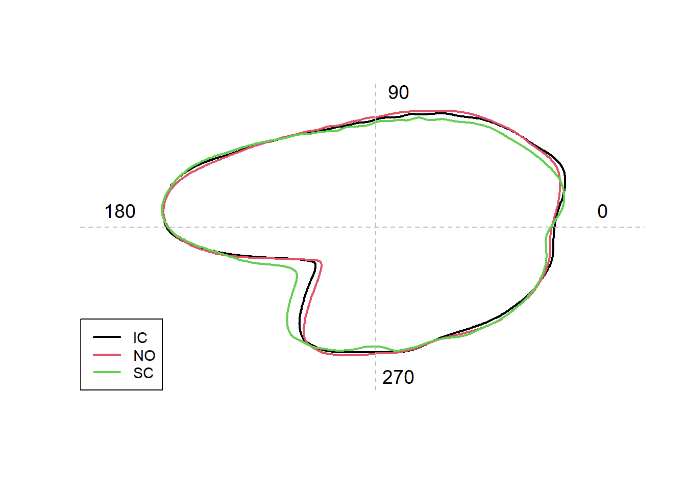
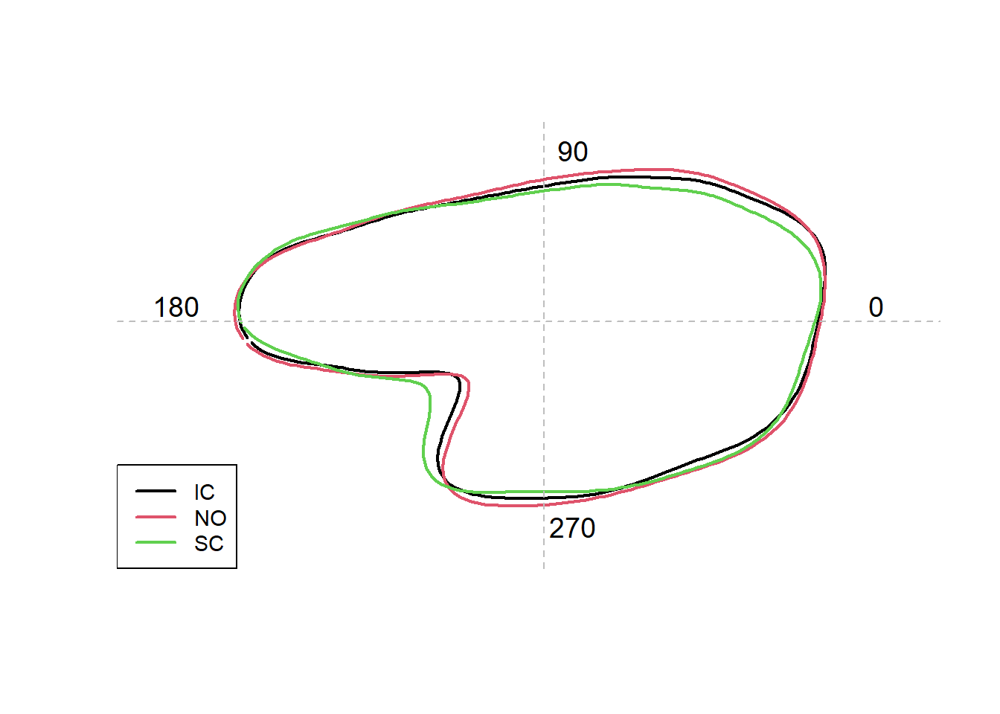
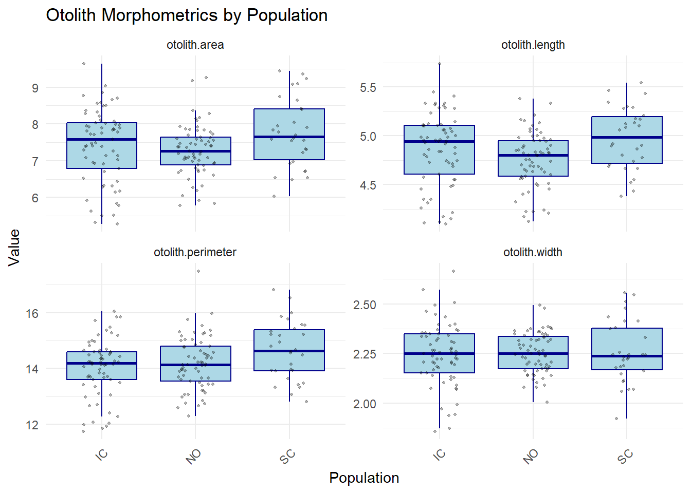

Images should then be taken and stored in full color, ensuring good focus and high resolution in jpeg format (.jpg)
Otoliths need to be oriented with their rostrum to the left
Make folder called ‘Shape Analysis’ and store the images from each sampling unit in a unique folder(s) within a folder called ‘Original’, and make a copy of the whole folder ‘Original’ and name it ‘Fixed’.
Both the ‘Original’ and ‘Fixed’ folders need to exist because images in both folders are used when the shapeR package is used to perform quality checks on otolith outlines
Setting up Data File
To the ‘ShapeAnalysis’ file, you will need to add a data file as a text file in csv format that includes each specimen (in rows), with information in columns such as sampling date, age, location, length, sex, maturity, etc.
Two columns in the data file are mandatory, ‘folder’ (consists of folder names; e.g., IC) and ‘picname’ (consists of file names e.g. ‘403_1’), which are used to link biological information for each fish to the otolith outline.
The column ‘length_cm’ needs to exist so it is possible to remove the allometric growth effect on otolith shape. If other measurements are used (fish weight, otolith weight etc.) a column for each parameter needs to be given in the data file.
Import Data
The following example requires the user to download an archive of JPEG files from: https://github.com/lisalibungan/shapeR/ place the ShapeAnalysis directory inside the working directory.
# load shape R and retreive the example datalibrary(here)
here() starts at C:/Users/rachel.brooks/Documents/GitHub/ShapeR
library(shapeR)data("FISH")#Set project path to the folder 'ShapeAnalysis'shape =shapeR(project.path =here("ShapeAnalysis"),info.file ="FISH.csv")
Creating a shapeR object from image files
detect.outline(): Obtain the outline of each otolith. The outlines are detected by first transforming the images into gray-scale. The images are then binarized using a threshold pixel value (intensity threshold) which can be defined by the user. The outlines are then collected automatically from all images in the folder ‘Fixed’. Modification of the outlines are stored in different slots within the shape data object.
Threshold argument is used to distinguish the white otolith from black background (essentially increases contrast)
write.outline.w.org argument determines whether the detected outline should be written on top of the original image (TRUE) or not (FALSE) in the folder ‘Original_with_outline’ which shapeR makes automatically and places into the folder ‘ShapeAnalysis’. It is recommended to run the images with the write.outline.w.org = TRUE the first time the images are run for quality checking, to see if the outline fits the original image from the microscope.
If an error occurs, or the outline is of low quality, the outline can be removed from the shapeR instance:
shape = remove.outline(shape,“IC”,“403_54”)
To view an individual otolith with outline:
show.original.with.outline(shape,“IC”,“403_54”)
smoothout argument calculates a weighted moving average over three succesive coordinate points to smooth multiple outlines. The number of iterations (ex: n = 100) provided by the user is the maximum number of iterations of smoothing. This argument is used to reduce high frequency pixel noise around the outlines which can corrupt Fourier or Wavelength analysis.
generateShapeCoefficients argument extracts the shape coefficient from the captured outlines
enrich.master.list argument connects data file containing information on origin and size of the fish to the outlines
# Trace orange outline around otolith - saves in Original_with_outlineshape =detect.outline(shape, threshold =0.2, write.outline.w.org =FALSE)
# Connect data file 'FISH.csv' to the outlinesshape =enrich.master.list(shape)# Save shape objectsave(shape, file ="test.RData")
Analyzing ShapeR object
Summary statistics
getMeasurements argument allows you to collect all otolith measurements (otolith length, width, perimeter, and area) from unstandardized otoliths
Feret length and width are concepts used in image analysis to describe the maximum distance between two parallel lines tangent to an object - measuring the longest distance across an object, regardless of orientation.
For each fish population (“pop”), the mean for the variables in the summary statistics (area, length, perimeter, width) can be calculated:
getStdMeasurements argument allows you to collect all otolith measurements (otolith length, width, perimeter, and area) from standardized otoliths
data("shape")# Get length, width, area, perimeter of otolithmeasurements <-getMeasurements(shape)# Calculate mean of the otolith morphometric variable: # Otolith areatapply(getMeasurements(shape)$otolith.area, getMasterlist(shape)$pop, mean)
plotWaveletShape argument plots the mean otolith shape using the Wavelet coefficients
plotFourierShape argument plots the mean otolith shape using the Wavelet coefficients
Can adjust “pop” to an alternate variable depending on what you’re looking to compare (i.e., “sex”, “species”, etc.)
# Plot mean otolith shape using Wavelet coefficient plotWaveletShape(shape, "pop", show.angle =TRUE, lwd =2,lty =1)

# Plot mean otolith shape using Fourier coefficient plotFourierShape(shape, "pop", show.angle =TRUE, lwd =2,lty =1)

Adjusting coefficients for fish length
stdCoefs argument evaluates each Wavelet and Fourier coefficient and adjusts the otolith shape with respect to allometric relationships with the fish lengths.
Those coefficients which show interaction (P<0.05), between population and length, are omitted automatically.
In order to account for increased alpha error due to multiple testing of the different coefficients it is possible to conduct the Bonferroni adjustment
3 Wavelet coefficients showed an interaction with fish length and were omitted (22, 37, 44). When applying Bonferroni adjustment, all but 1 were included
4 Fourier coefficients showed an interaction with fish length and were omitted (8, 13, 20, 30). When applying Bonferroni adjustment, all were included
Wavelet standardization. No coefficients removed
Fourier standardization. No coefficients removed
Measurement standardization. No coefficients removed
Reconstruction
estimate.outline.reconstruction argument estimates the quality of the Wavelet and Fourier reconstruction by comparing how it deviates from otolith outline
The quality increases with the increase of Wavelet/Fourier coefficients used
plotWavelet argument can be used to inspect how the variation in the Wavelet coefficients is dependent on the position along the outline. The proportion of variation among groups, the interclass correlation (ICC), gives further information about the partition of the variation along the outline
Based on patterns, most of the variation among groups can be traced to 2 areas of the otolith:
The following objects are masked from 'package:stats':
filter, lag
The following objects are masked from 'package:base':
intersect, setdiff, setequal, union
fish_data <- shape@master.list# Select morphometric columnsmorphometrics <-c("otolith.length", "otolith.width", "otolith.area", "otolith.perimeter")# Pivot to long formatlong_data <- fish_data %>%select(pop, all_of(morphometrics)) %>%pivot_longer(cols =all_of(morphometrics),names_to ="morphometric",values_to ="value" )ggplot(long_data, aes(x = pop, y = value)) +geom_boxplot(outlier.shape =NA, fill ="lightblue", color ="darkblue") +geom_jitter(width =0.2, alpha =0.3, size =0.7) +facet_wrap(~ morphometric, scales ="free_y") +theme_minimal() +labs(title ="Otolith Morphometrics by Population",x ="Population",y ="Value" ) +theme(axis.text.x =element_text(angle =45, hjust =1))

# Run Kruskal-Wallis to test otolith shape/size among populationslibrary(rstatix)
Attaching package: 'rstatix'
The following object is masked from 'package:stats':
filter
# Initialize a results listkruskal_results <-list()for (metric in morphometrics) { formula <-as.formula(paste(metric, "~ pop")) result <-kruskal.test(formula, data = fish_data)# Print summarycat("\n\n---", metric, "---\n")print(result)# Store result kruskal_results[[metric]] <- result}
--- otolith.length ---
Kruskal-Wallis rank sum test
data: otolith.length by pop
Kruskal-Wallis chi-squared = 9.1145, df = 2, p-value = 0.01049
--- otolith.width ---
Kruskal-Wallis rank sum test
data: otolith.width by pop
Kruskal-Wallis chi-squared = 0.031084, df = 2, p-value = 0.9846
--- otolith.area ---
Kruskal-Wallis rank sum test
data: otolith.area by pop
Kruskal-Wallis chi-squared = 5.8759, df = 2, p-value = 0.05297
--- otolith.perimeter ---
Kruskal-Wallis rank sum test
data: otolith.perimeter by pop
Kruskal-Wallis chi-squared = 5.4921, df = 2, p-value = 0.06418
Otolith Shape Analysis
library(vegan)
Loading required package: permute
Loading required package: lattice
cap.res =capscale(getStdWavelet(shape) ~getMasterlist(shape)$pop)anova(cap.res, by ="terms", step =1000)
Permutation test for capscale under reduced model
Terms added sequentially (first to last)
Permutation: free
Number of permutations: 999
Model: capscale(formula = getStdWavelet(shape) ~ getMasterlist(shape)$pop)
Df Variance F Pr(>F)
getMasterlist(shape)$pop 2 0.26216 19.564 0.001 ***
Residual 157 1.05193
---
Signif. codes: 0 '***' 0.001 '**' 0.01 '*' 0.05 '.' 0.1 ' ' 1
eig =eigenvals(cap.res,constrained = T)
Argument `constrained` is deprecated; use `model` instead.